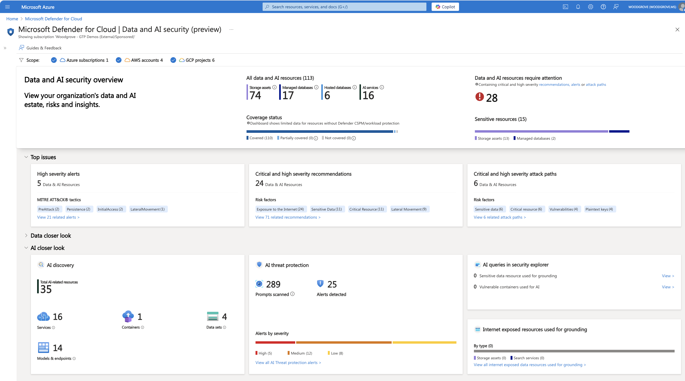
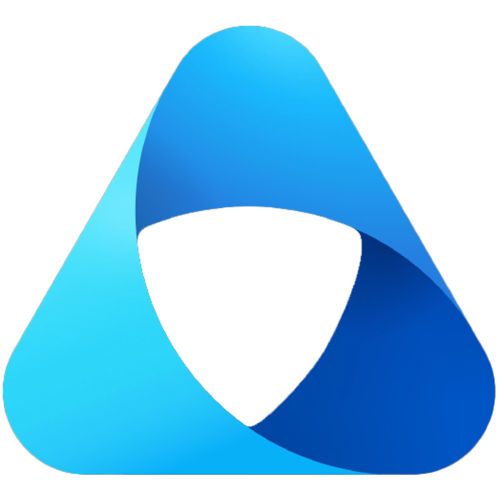

Summary
With the platform secured by design (Chapter 5), this chapter covers what happens after deployment: detecting risk at runtime, maintaining security posture from code to cloud, designing telemetry that's actually useful during an investigation, and unifying observability across IT, developer, and security teams through Agent 365 and the Foundry Control Plane.
Core concepts
Why runtime is different
Four properties make runtime AI risk fundamentally different from traditional application runtime risk:
- Agents chain actions, tools, and APIs in sequences developers never explicitly wrote — the code path is generated by the model's reasoning at execution time, not fixed at deployment time.
- Real-time prompts and retrieved data can silently redirect an agent's decision path — nobody is monitoring the agent's "thought process" the way a debugger monitors a stack trace.
- An attacker only needs to influence one token of the model's reasoning to change the entire outcome of a task or action.
- The most dangerous vulnerabilities now appear after deployment — when agents interact with unpredictable inputs, users, and external systems — not during code review.
The Gen AI threat landscape, by layer
Threats map cleanly to four architectural layers, each requiring different controls:
| Layer | Representative threats |
|---|---|
| AI usage (user-facing) | Direct prompt injection (UPIA), sensitive data leakage, unauthorized access/oversharing, overreliance, model denial of service, wallet abuse (GPU cost abuse) |
| AI application | Data poisoning, indirect prompt injection (XPIA), orchestration vulnerabilities, supply-chain risks |
| AI platform | Insecure plugin/skill design, jailbreak, data poisoning |
| Model | Model theft, data poisoning, model vulnerabilities |
Notice that data poisoning appears at three of the four layers — training data, retrieved context, and platform-level plugin data can each be poisoned independently, which is why single-layer defenses (content filtering alone, or model-level guardrails alone) consistently under-perform layered defenses.
Architecture discussion
Security posture management, code to cloud

Out-of-the-box runtime detections
Powered by Microsoft Threat Intelligence, Microsoft Defender detects two categories of runtime risk without custom rule authoring:
- Suspicious content — jailbreak attempts with malicious intent, secrets and sensitive data appearing in prompts or output, malicious URLs, and encoding/manipulation tricks used to evade filters.
- Suspicious behaviors — anomalous user behavior, application behavior, tool-invocation behavior, and access parameters that deviate from an agent's established baseline.
Designing telemetry that's actually useful
Every request should carry six identifiers for correlation across services: User ID (who is trying to use the application), Agent ID (which agent is involved in the workflow), Application ID (which AI application — chatbot or agentic), Session ID (the session the user or agent opened), Request ID (unique per LLM call), and other telemetry such as prompt hashes, prompt segments, security-check results, and timestamps.
What actually gets logged matters as much as what's captured:
| Log this | Don't log this |
|---|---|
| Request ID — unique identifier for cross-service correlation | Full prompts containing PII, credentials, or sensitive data |
| Session ID — conversation context and behavior patterns | Complete model responses with potentially confidential information |
| Prompt hash — detects repeated malicious prompts without storing PII | API keys or authentication tokens |
| Prompt sample — first ~80 characters, sanitized, for investigation | Personally identifiable health, financial, or personal information |
| User context, model deployment, response length, security-check status (pass/fail/unknown) | Full conversation history in plaintext |
This table is the direct fix for the gap this workshop opened Chapter 4 with: Samsung's detection was manual pattern-matching across incidents, because nothing was logging prompt hashes or security-check status in real time. A prompt-hash log line would have flagged the third incident on the first repeat, automatically.
From signal to SIEM

Applied to the FinOps architecture
Layered on the Chapter 2 architecture, Defender for Cloud (including Threat Protection for AI) monitors for OWASP LLM and Agentic threats, anomalous activity across the overall AI workload, and proactively detects configuration weaknesses. Agent 365 provides unified visibility and control across registration, governance, security, observability, and lifecycle management — spanning first-party, third-party, and custom agents — through one control panel that touches the M365 admin center, Entra, Purview, Defender, Power Platform, and Secrets.
An IT control plane for every role
Observability is delivered differently depending on who's consuming it, but built on the same security primitives underneath:
- IT teams — Microsoft Agent 365: agent directory, policy-based controls, security & compliance, monitoring & logs.
- Dev teams — the Foundry Control Plane from Chapter 5.
- Security teams — Microsoft Defender, Microsoft Entra, and Microsoft Purview directly.
Underneath all three views: security as a core primitive — agent IDs and inventory, data security and policies, security posture, conditional access, threat detection and remediation, and compliance policies and reporting. Each role sees a different dashboard over the same underlying control data.
The Security Dashboard for AI (ai.security.microsoft.com) gives security and risk leaders a unified view: gain unified AI risk visibility, accelerate discovery of the most critical risks, and mitigate risk with centralized actions — included for Microsoft security customers.
Key security considerations
- Runtime detection has to assume the code path wasn't written by a developer. Traditional application security assumes a known, reviewed control flow; agentic systems generate their control flow at runtime, which means anomaly detection — not static analysis — is the primary defense.
- Data poisoning is a cross-layer threat. A defense at only one of the four layers (usage, application, platform, model) leaves the other three exposed to the same class of attack.
- Telemetry design is a security control, not just an ops concern. The specific choice to log prompt hashes instead of full prompts is what makes detection possible without creating a second data-leakage surface in your own logging pipeline.
- Multi-role observability only works if the underlying primitives are actually shared. If Agent 365's agent directory and the Foundry Control Plane's agent inventory silently drift apart, IT and dev teams will disagree about what agents exist — reintroducing the sprawl problem from Chapter 3.
Recommended practices
- Centralize AI security observability rather than letting each team build its own dashboard from raw logs — see Securing GenAI workloads in Azure.
- Enable Defender for AI across every subscription that runs AI workloads, not a subset — see AI workload alerts reference.
- Use Agent ID (Chapter 3) as the central repository correlating identity, data protection (Chapter 4), and runtime telemetry (this chapter) — see Announcing Microsoft Entra Agent ID.
- Train SOC analysts on GenAI-specific concepts, architecture, and incident types before your first prompt-injection alert fires, not after.
- Log the six correlation identifiers (User ID, Agent ID, Application ID, Session ID, Request ID, prompt hash) on every request by default — treat their absence as a deployment blocker, not a nice-to-have.
Technologies referenced
- Microsoft Defender for Cloud (AI-SPM, Threat Protection for AI) — runtime detection and code-to-cloud posture management.
- Microsoft Purview (DSPM for AI) — data-security signals feeding the same SIEM pipeline.
- Microsoft Sentinel / SIEM and data lake — centralized correlation of AI security signals.
- Microsoft Agent 365 — unified agent registration, governance, security, and lifecycle across first-party, third-party, and custom agents.
- Security Dashboard for AI (ai.security.microsoft.com) — unified AI risk visibility for security and risk leaders.
Key takeaways
- Runtime AI risk is fundamentally anomaly-detection-driven, because the agent's control flow is generated at execution time, not fixed at deployment.
- Deliberate telemetry design (log hashes and status, not full prompts) is what makes real-time detection possible without creating a second leakage surface.
- Agent 365, the Foundry Control Plane, and direct Defender/Entra/Purview access give IT, dev, and security teams role-specific views over the same shared security primitives — they only work if that underlying data actually stays in sync.